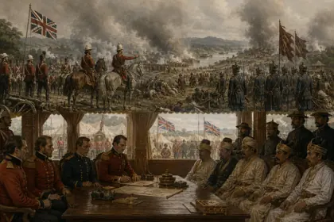

1824–1826
active 1823–1826 · British Agent on the north-east frontier
British official in Assam and the north-east in the years before and after Yandabo.
Role from general knowledge; check against a dedicated source.
Record confidence: low.